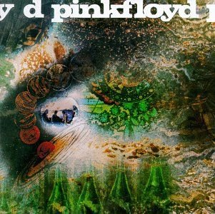
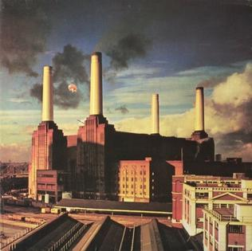

-
The Piper at the Gates of Dawn is the debut studio album by Pink Floyd, released in 1967.
Buy On Amazon -

A Saucerful of Secrets is the second studio album, released in 1968.
Buy On Amazon -
More is the first soundtrack album by Pink Floyd and 3rd studio album, released in 1969.
Buy On Amazon -
Ummagumma is the 4th studio album also a double album, released in 1969.
Buy On Amazon -

Atom Heart Mother is the 5th studio album, released in 1970.
Buy On Amazon -

Meddle is the sixth studio album it was recorded during touring commitments, released in 1971.
Buy On Amazon -

Obscured By Clouds based on their own sountrack for the film La Vallée, released in 1972.
Buy On Amazon -

Dark Side Of The Moon is the eigth studio album by Pink floyd and one of the most iconic albums ever, released in 1973.
Buy On Amazon -

Wish You Were Here is the ninth studio album by Pink Floyd it was tribut to former member Syd Barret who left 7 years prior, released in 1975.
Buy On Amazon -

Animals is the tenth studio album by Pink Floyd, released in 1977.
Buy On Amazon -
The Wall is the eleventh studio album, released in 1977.
Buy On Amazon -
The Final Cut is the twelvth studio album by Pink Floyd, released in 1983.
Buy On Amazon -
A Momentary Laspe Of Reason is the thirteenth studio album, released in 1987.
Buy On Amazon -

The Division Bell is the fourteenth studio album and one of the last for some time, released in 1994.
Buy On Amazon -

The Endless River is the fifteenth and the last album by Pink Floyd it features unused recordings while recording The Division Bell, released in 2014.
Buy On Amazon